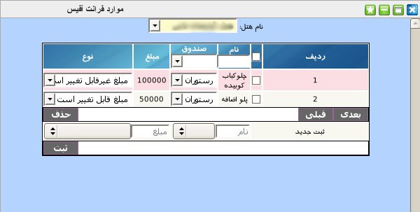

۱-موارد فرانت آفیس
در این پنل مدیر ارشد می تواند تمام زیر مجموعه های صندوق ها و فرانت آفیس را برای هر مجموعه هتل وارد نماید. مثلا برای صندوق رستوران, انواع غذا هایی که سرو می شود و باید در سیستم ثبت گردد و سند داشته باشد جزء این زیر مجموعه می شود.

برای ثبت زیر مجموعه برای هر صندوق ابتدا باید از منوی کشویی بالای جدول نام هتل مورد نظر را انتخاب نمایید سپس از قسمت پایین پنل نام زیر مجموعه را وارد, از منوی بعدی صندوق مورد نظر را انتخاب کنید,در قسمت بعدی مبلغ تعیین شده برای این مورد را وارد نمایید سپس نوع مبلغ که قابل تغییر می باشد یا خیر را انتخاب نمایید و در انتها بر روی دکمه ثبت کلیک نمایید. برای تسهیل در جستجوی موارد می توانید عنوان مورد را در کادر موجود در عنوان ستون نام وارد و کلید Enter را بزنید همچنین برای جستجوی یک صندوق خاص می توانید از منوی کشویی موجود در عنوان ستون صندوق نام صندوق را انتخاب کنید.
جهت ویرایش مقادیر هر آیتم بر روی آن کلیک نمایید سپس مقدار مورد نظر را تغییر داده و کلید Enter را بزنید.
جهت حذف تکی هر آیتم, موس خود را بر روی شماره ردیف آیتم برده و بر روی لینک حذف کلیک نمایید.
جهت حذف گروهی آیتم ها, آیتم های مورد نظر را انتخاب و بر روی دکمه حذف کلیک نمایید.